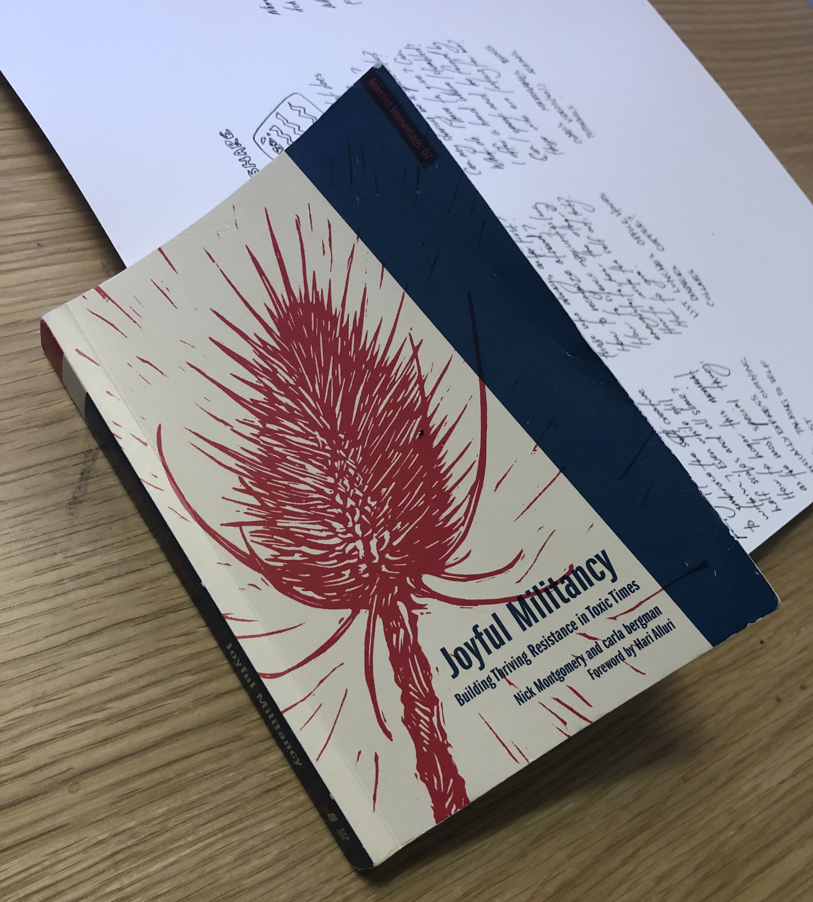
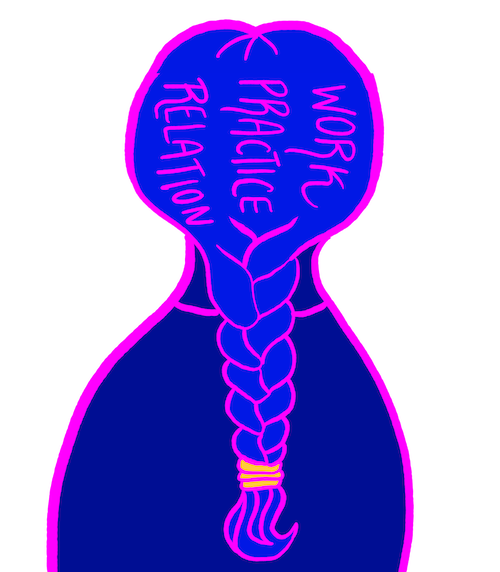
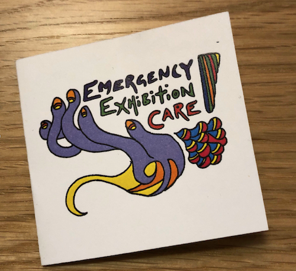
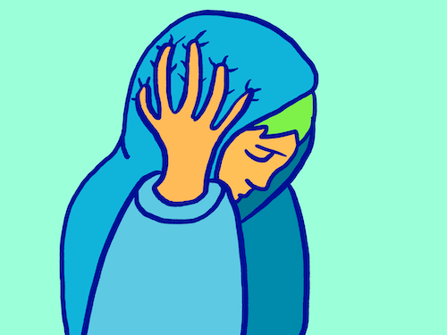
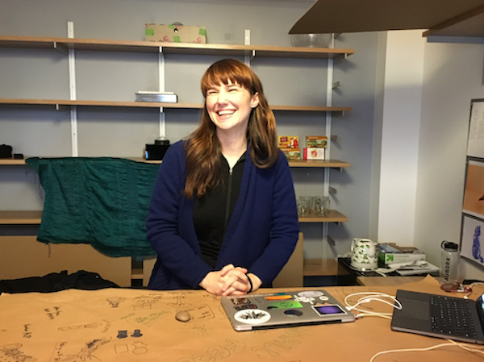

Leaving The Game Center:
Closing thoughts
I’m looking back at my experience as the artist-in-residence at the NYU Game Center. It seems incredible, especially now, that this ever happened. Looking back, I understand my experience as a braid of shaping practice, producing work, and relation.
I wrote this months ago. But then COVID-19 happened, and it seemed strange to share these thoughts while everyone was huddling at home in distress.
Things aren't really better now, but we're used to it. I guess that's the way this works. We get used to almost anything.

Product & Process
I’m resisting the pressure to reduce this into a list of achievements and products. I'm resisting the quiet pressure from (imaginary) funders, employers, and peers to only notice and value things that are easy to measure.
There's a constant whispering that if only we push ourselves to the front, present the work with enough hyperbole, and shake the right hands while saying the right words we'll find a way to be seen, to find our place in things, and to thrive.
Instead, I'm trying to hold being-in-practice and being-in-relation at the front. They don't have the howling glamour of achievements. But for me, they are the foundation of everything.
What I did as Artist in Residence
The work I did was a braid of shaping practice, relations with the people/ecosystem around me, and producing work. Like a braid, these aren't separate items, they come from the same place and are inextricable from each other.
Practice (forming context and work):
- being present
- wandering with and without destination
- grappling with identity and body, navigating illness
- failing and fumbling, tuning ideas
- fiddling with materials - wood, garbage, TAP plastics (thinking about plastic), old arcade cabinets, old curtains, fabric, metal, solder, electronic components, food, paper, more garbage
- playing with tools - CNC Mill, laser cutter, power tools, security systems, 3d printers, security card reading/writing tools, smoke machines, lights, projectors, fabrication tools, soldering tools, javascript
- auditing classes - Intro to Game Design with Eric Zimmerman, Joy and Games with Jane Friedhoff, classes with Winnie Song, Naomi Clark, Dylan McKenzie, Fernández-Vara, Matt Parker, Mitu Khandaker, Robert Yang, Frank Lantz, Greg Heffernan, Matt Boch, many more
An early prototype of a controller
Relation (community/the living system):
- Sharing physical space with people, including students, faculty, people doing soft orbits around the space, and people on the streets and in spaces around the city
- Taking part in connecting people together and being connected myself
- Navigating conflict, alienation, insecurity alongside (slower blooming) confidence, connection, rootedness
- Attending a climate change protest
- Becoming attached in the slow way that requires proximity and time
- Visiting spaces & places - Babycastles, La MaMa, New York Public Library, Dance Clubs, Food places, EyeBeam, SFPC, ITP, parks, ferries, many many more
Products (things):
- Making Follow, a commissioned work for the No Quarter Exhibition
- Creating joyful collaborative projects including Arcade Friend, Tiny Dance Closet, and Why Are you Here?
- Designing and performing Emergency Exhibition Care
- Working on Keys 4 All - everyone has the right to be here
- A formal artist talk at the NYU Game Center
- Speaking at the first-ever ITP/IMA Games Club
- Speaking at WWC NYC
- Giving feedback on student work
- Holding regular office hours and mentorship
- Guest teaching Intro to Game Design
- Designing and holding a workshop on stress
A keycard project

Emergency exhibition care booklet cover

Emergency exhibition care booklet inside
Being a resident
Having a paid artist residency in a space with incredible people is a major gift. It's also a strange space to occupy. I wrote about this earlier.
Timeline
Looking back, I understand the residency in three parts
- Part 1 (Aug - Oct): Relocating to New York City and producing a work. An intense 8-week hustle to design and code a brand new game for No Quarter. Simultaneously navigating major personal life changes.
- Part 2 (Oct - Nov): Working on my NYU Game Center talk. Dealing with emergency housing instability. Physically recovering from Part 1.
- Part 3 (Nov - Dec ): A life-changing magical free time of collaboration, shaping work, and thriving. Something I will delightedly carry with me for the rest of my life.

Private notes
Working on #arcadeFriend, a collaborative project with new friends at @NYUGameCenter pic.twitter.com/5Qu6un1mup
— Marie Claire LeBlanc Flanagan (@omarieclaire) December 8, 2019
Early testing of Arcade Friend
Learning about formal games
During the residency, I learned a lot about games. While studying the formal structure of traditional games I finally clarified some of the things I love about play, and also what I don’t like about games.

For example: I am totally uninterested in using emotional manipulation to evoke intense scarcity-based fear and pushing players to embody stress-motivated competitive behaviours. This is no fun for me and I’m totally bewildered that this is fun for anyone.
Sometimes I think this is just a matter of volume. Like I might like this as much as anyone, but the volume is just too loud.
Challenges
- Connection: Relationships and community take time, and I didn't have time. I had to rally all my courage and be vulnerable, inviting myself into people's busy lives.
- Time: I felt like each minute was full of possibility and the weather was always perfect and the work was always waiting and the time kept shrinking.
- Asking for help: I found it very challenging to even find the right person to ask for help (code, design, moving, everything!) let alone know what to ask or how to ask.
- Health: Some major health challenges including an injury that left me laying on the floor of my office with heat pads.
- Money: This was a well-paying job. But New York is expensive. And unexpected housing precarity in combination with health-related housing needs made the situation worse. Canada Council rejected my application for this residency (no feedback). Any *why* is possible, without feedback it's a gaping hole of possibility.
- Housing/Safety: I had more than one incident where my housing felt unsafe and precarious. This got expensive, overwhelming, and generally awful. Thankfully P & T rescued me from the worst of it.
Regrets
- I regret not starting the No Quarter commission before the residency. I'm not sure where I would have found the time to design, code, and test it sooner, but building a new game in 8 weeks consumed all my time and energy.
- I wish I had started the following things sooner:
- office hours
- sitting in on classes
- inviting people to lunch
- I didn't start the three things above until well after the No Quarter show (I had zero capacity/time) but they really helped with connection, community, and finding my place.
Follow - My No Quarter Project
If I were staying longer?
These are the thing that moved me the most, these are the parts I felt were still unfolding as I had to leave.

The invitations I made for people to collab with me. I left some with plates of cookies and snacks
- Little experiments / playful interventions: while working on these experiments I was embodying my art practice in a powerful and fulfilling way. These include: Emergency Exhibition Care, Dance Closet, Arcade Friend, and Why Are You Here
- Knowledge / skill-sharing: for example, I noticed that assertiveness (people asserting needs clearly and early) was a needed skill. I did individual mentoring, but I would have liked to share more.
- Collaborations: my favourite experiments and interventions were collaborative. When I was working with people (faculty, staff, students, outside community) on weird little projects I felt like we were building these live wires between us, creating the work and the context for the work all at once.

Feedback
When I was leaving I called a little meeting to review the experience. It was an in-person presentation of the content above. Below are few comments from a people who attended.
- N: I loved the questions you sent before the residency. You sent these questions to us asking “what would a successful residency look like?” and these other questions about what we value and need and it shaped the conversation and the entire experience.
- D: Everyone here knew of you and about you because of these little special things you did. I loved the interventions for the showcase, Arcade Friend, the Dance Closet, the workshops you hosted. The big things were great too, but it was the little things that were most special for me.
- D: You are a model artist in residence. I loved when you came to speak at survival skills, and I LOVED your talk. It would make sense to do the talk earlier, now everyone wants to talk to you even more but you are leaving.
- C: This residency needs to be longer!
- F: You were an ideal artist in residence. I understand what artists in residence can do now in a way I didn’t get before. You have raised the bar on what we are able to imagine.

Photo from the tiny dance closet
Thanks
Thank you to everyone at the Game Center and beyond who helped to make this experience so unforgettable. Aaron, Alina, Arnab, Atharva, August, Bennet, Billy, Brent, Caroline, Catherine, Catt, Charlie, Charles, Clara, Colleen, Dana, Danny, David, Dylan, Eduardo, Elizabeth, Ellen, EMi, Eric, Eris, Frank, Gabe, Gene, George, Greg, Gwynna, Hermione, Holly, Ida, ITP, Jackie, Jesse, Jessica, John, Julia, Karina, Kay, Kevin, Logan, Mailis, Maira, Marie, Martin, Mark, Mary, Matt, Matt, Mike, Mio, Mitu, Mio, Naomi, Nathalie, Noah, Peiling, Prabhakar, Prem, Rachel, Raymond, Robert, Robin, Roi, Rowan, Samantha, Schuyler, Siddarth, Steph, Sukanya, Suzanne, Tara, Toby, Toni, Vincent, and Winnie.
